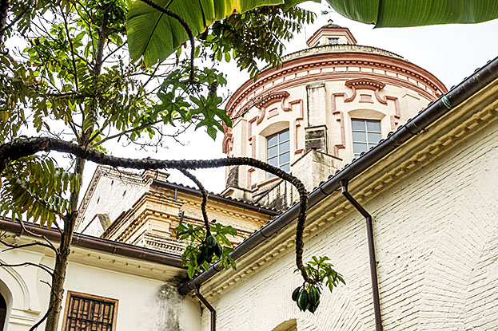
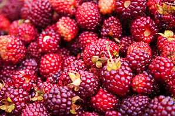
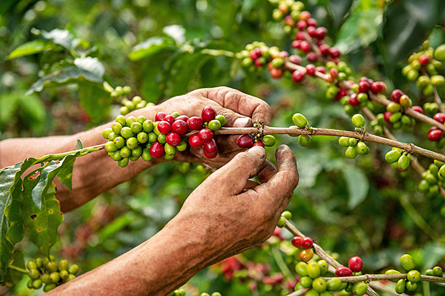
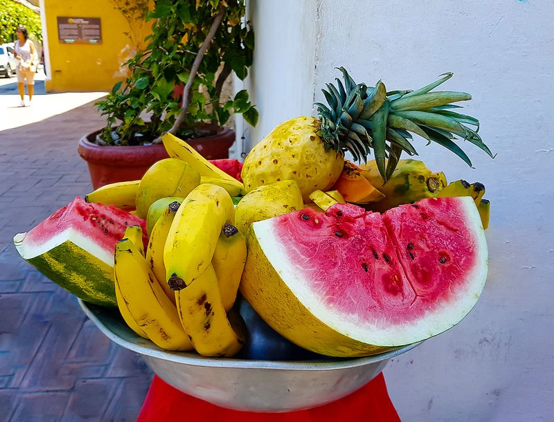
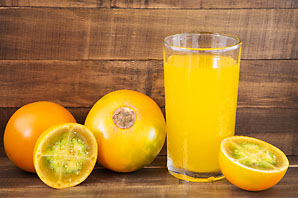
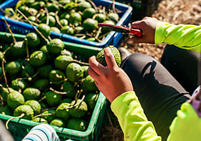

🍽️ Colombiaanse Keuken
Van hartige soepen tot gefrituurd straateten · Hover of tik op een tegel voor de foto
🍲 Gerechten
🌽 Street Food
🐟 Zeevruchten
☕ Koffie & Dranken
🍮 Desserts
🐜 Avontuurlijk
💡 Tip: Hover over een tegel (of tik op mobiel) om de foto te zien. Foto's komen uit de Lonely Planet Colombia reisgids. Tegels zonder foto staan onderaan in de Google-zoeklijst.
🍲 Hoofdgerechten
De basis van de Colombiaanse keuken: stevig, vers en vol smaak. Elke regio heeft zijn eigen variatie op soepen, gegrild vlees en rijstgerechten.
Gerecht
Bandeja Paisa
Colombia's meest iconische bord: bonen, rijst, gehakt, chorizo, chicharrón, gebakken ei, avocado en gebakken banaan. Eén bord = één maaltijd.
📍 Medellín & Antioquia
↺ foto
📸Geen foto in gids
Zoek op Google →
Soep · Bogotá
Ajiaco
Bogotá's handtekening: romige kippensoep met drie soorten aardappelen, guasca-kruid en kappertjes. Troostend en uniek van smaak.
📍 Bogotá
↺ foto

AjiacoBogotá's beroemdste soep · © Lonely Planet
Soep · Nationaal
Sancocho
Stevige stoofsoep met vlees (kip, varken of vis), yuca, maïs en plantain. Elke regio heeft z'n eigen versie — het comfort food van Colombia.
↺ foto
📸Geen foto in gids
Zoek op Google →
Grill · Huila
Asado Huilense
Varkensfilet gemarineerd in sinaasappelsap, laurier en tijm, traag gegrild. Typisch uit de regio Huila — een van de beste grill-gerechten van het land.
📍 Huila (centraal)
↺ foto

Asado HuilenseGegrild varken uit Huila · © Lonely Planet
Feestgerecht · Tolima
Lechona
Heel spit-geroosterd varken gevuld met gekruide gele erwten. Klassiek bij feesten en markten. Een spektakel om te zien én te eten.
📍 Tolima
↺ foto
📸Geen foto in gids
Zoek op Google →
Ontbijt · Overal
Tamales
Maïsmeel met kip of varken, gegaard in een bananenblaad. Elk deel van Colombia heeft z'n eigen vulling en binding. Ochtendklassiek.
↺ foto
📸Geen foto in gids
Zoek op Google →
🐟 Zeevruchten & Kust
Twee kusten betekenen twee keukens: de Caribische kant met kokos en tomaat, de Stille Oceaan kant met meer kruidige, zwarte sauzen.
Caribbean lunch
Typische Carib. Lunch
Rijst met kokos, gebakken vis, patacones, salade en ají-saus. De standaard Caribische middag-combo langs de kust van Cartagena tot Palomino.
📍 Cartagena · Minca · Palomino
↺ foto

Typische Caribbean lunchRijst, vis, patacones · © Lonely Planet
Visgerecht · Caribisch
Pargo Sudado
Hele rode snapper gestoofd in een saus van kokos, tomaat en ui. Een van de beste visgerechten van de Caribische kust — bestellen in Cartagena!
📍 Cartagena · kust
↺ foto
📸Geen foto in gids
Zoek op Google →
Visgerecht · Rivier
Viudo de Bocachico
Hele gestoomde zoetwatervis geserveerd op plantain. Typisch langs de grote rivieren — een eenvoudig maar smaakvolle rivier-klassieker.
↺ foto
📸Geen foto in gids
Zoek op Google →
🌽 Street Food & Snacks
Colombia heeft enkele van de beste straatsnacks van Zuid-Amerika. Altijd warm, altijd gebakken, altijd lekker.
Nationaal eten
Arepa
Colombia's iconische maïsbrood. Gegrild, gebakken of gestoomd — gegeten bij ontbijt, lunch én avondmaal. Gevuld met kaas, ei, vlees of chicharrón.
↺ foto
📸Geen foto in gids
Zoek op Google →
Street food
Empanadas
Gefrituurd deegpakketje van maïs gevuld met vlees en aardappel. Overal te vinden voor een paar peso's — perfecte tussendoortje op elk uur van de dag.
↺ foto
📸Geen foto in gids
Zoek op Google →
Snack · Caribisch
Patacones
Plat gebakken groene plantain — geplet en tweemaal gefrituurd. Knapperig buiten, zacht van binnen. Gegeten als bijgerecht of met guacamole.
↺ foto

PataconesGefrituurd plantain · © Lonely Planet
Straateten
Arequipe & Bocadillo
Arequipe is Colombia's dulce de leche — gekaramelliseerde gecondenseerde melk. Bocadillo is ingedikte guave-gelei. Beide onmisbaar bij kaas en brood.
↺ foto

Straatventers BogotáArequipe, jam & kaas · © Lonely Planet
Brood · Cali
Pan de Bono
Zacht broodje van maïsmeel en cassave met kaas. Warm uit de oven, met een kop tinto — één van de beste ontbijt-combos van Colombia.
📍 Typisch Valle del Cauca
↺ foto
📸Geen foto in gids
Zoek op Google →
Snack · Kerst
Buñuelos
Zoet-hartige bolletjes van gefrituurd maïsmeel en kaas. Traditioneel met kerst, maar het hele jaar door te vinden. Altijd warm bestellen.
↺ foto
📸Geen foto in gids
Zoek op Google →
Exotisch fruit · Pacifiek
Chontaduro
Gekookte vrucht van een junglepalmsoort, met zout, honing of mayonaise. Wordt gezegd een afrodisiacum te zijn. Typisch in Cali en de Pacifische kust.
📍 Cali · Pacifische kust
↺ foto
📸Geen foto in gids
Zoek op Google →
☕ Koffie & Dranken
Colombia is de derde grootste koffieproducent ter wereld. De koffiecultuur is hier een levenswijze — en de tropische fruitdranken zijn ongeëvenaard.
Koffie · Overal
Tinto
Colombia's alomtegenwoordige zwarte koffie — altijd vers, altijd warm, altijd goedkoop. In kleine kopjes geserveerd overal. Cafébarcultuuur in steden is sterk gegroeid.
↺ foto

KoffiecaféColombiaanse koffiecultuur · © Lonely Planet
Koffie · Salento
Koffieplukken
In de koffiestreek kan je meeplukken op een finca. Van kers tot kopje: fermentatie, drogen, roosteren en proeven. Een onvergetelijke ervaring in Salento.
📍 Salento · Manizales
↺ foto

KoffieplukkenManizales · © Lonely Planet
Fruit · Overal
Tropisch Fruit
Maracuyá, lulo, guanábana, tomate de árbol, uchuva, mamoncillo... Colombia heeft 40+ exotische fruitsoorten die je nergens anders vindt. Markten zijn verplicht!
↺ foto

Tropisch fruit ColombiaMarkten zijn een belevenis · © Lonely Planet
Drank · Nationaal
Aguardiente
"El Guaro" — Colombia's nationale anijsdrank op basis van suikerriet. Geen feest zonder. Altijd koud drinken, shots of met gember. Sterk (29–30% alc.).
↺ foto
📸Geen foto in gids
Zoek op Google →
Fruitdrank · Cali
Lulada
Verfrissende drank van lulo-fruit (zoet-zuur), water en suiker. Typisch uit Cali — lulo smaakt naar een kruising tussen sinaasappel en passievrucht.
📍 Cali · Eje Cafetero
↺ foto
📸Geen foto in gids
Zoek op Google →
IJsdrank · Caribisch
Cholado
Crushed ice met lagen vers fruit, gecondenseerde melk, siroop en soms ijs. Verplicht bij 35°C in Cartagena. Verkrijgbaar bij straatkarren.
📍 Cartagena · Cali
↺ foto
📸Geen foto in gids
Zoek op Google →
🍮 Desserts & Zoet
Colombianen houden van zoet — van gedroogde guavepasta tot handgemaakt ijs en kerstgebak.
Dessert · Kerst
Natilla
Zoete maïspudding van panela en kaneel — Colombia's kerstdessert bij uitstek. Stevige, goudgele plak die het hele jaar door te vinden is op markten.
↺ foto

NatillaMaïsgebaseerde kerstpudding · © Lonely Planet
IJs · Artisanaal
Helado de Paila
Met de hand gemaakt ijs in een bronzen kom over ijs. Fruit en suiker worden traag geroerd tot romig roomijs. In Salento en marktsteden te vinden.
↺ foto
📸Geen foto in gids
Zoek op Google →
Snoep · Caribisch
Cocadas
Klontjes van geraspte kokos met panela (ruwe suiker) — hard gedroogd of zacht en kleverig. Een populair snoepmiddel langs de Caribische kust.
📍 Cartagena · Caribbean
↺ foto
📸Geen foto in gids
Zoek op Google →
Fruitdessert
Salpicón
Fijngesneden verse fruitsalade in zoet sinaasappelsap — soms met een scheutje aguardiente. Frissend en kleurrijk. Perfecte lunch-afsluiter bij warmte.
↺ foto

Tropisch fruitSoursop, guave · © Lonely Planet
🐜 Avontuurlijk Eten
Voor de durvers: Colombia heeft een aantal regionale specialiteiten die je elders niet snel tegenkomt.
Insecten · Santander
Hormigas Culonas
"Dikke billen mieren" — gefrituurd met zout. Een delicatesse uit Santander die al eeuwen door de Guane-bevolking gegeten wordt. Knapperig, nootachtig.
📍 Bucaramanga · Santander
↺ foto
📸Geen foto in gids
Zoek op Google →
Vlees · Nariño
Cuy
Gegrild cavia — een pre-Colombiaans gerecht dat nog steeds gegeten wordt in de Andesregio's nabij de Ecuadoriaanse grens. Mager en pittig gemarineerd.
📍 Nariño · Pasto
↺ foto
📸Geen foto in gids
Zoek op Google →
Wild · Llanos
Chiguiro
Capibara — het grootste knaagdier ter wereld — gegrild boven open vuur. Typisch in de Llanos Orientales. Licht vlees, vergelijkbaar met lam of varken.
📍 Llanos · Casanare
↺ foto
📸Geen foto in gids
Zoek op Google →
Grill · Overal
Chunchullo
Gegrilde koedarm — knapperig van buiten, mals van binnen. Gegeten met empanadas en ají. Populair op weekend-grillmarkten in Bogotá en Medellín.
↺ foto
📸Geen foto in gids
Zoek op Google →
📸 Geen foto gevonden in de reisgids — zoek zelf op:
Deze gerechten staan in de Lonely Planet maar hadden geen bruikbare foto in de EPUB. Klik een tegel om te zoeken op Google Images: